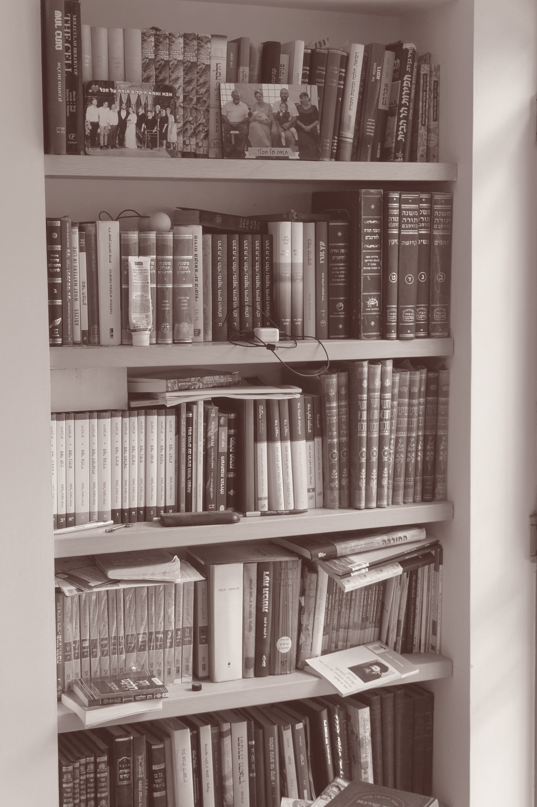
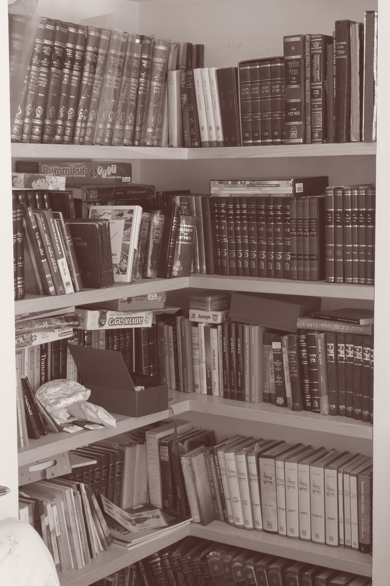

מדפים לדור חדש
גלול להמשך


הספרייה בבית הוריי
הספרייה היא מרכז הבית היהודי.
במשך דורות מה שחיבר אותנו לשורשים שלנו כעם היו הספרים - לא סתם אנו מכונים "עם הספר".
כשההורים שלי תיכננו את הבית שלהם, אחד הדברים שהם שמו עליהם דגש היה הספרייה בסלון שמהווה את מרכז הבית. גם בשאר החדרים בבית בכל חדר ישנה ספרייה קטנה.
מהכניסה למערכת החינוך, הישיבות התיכוניות והמסגרות שאחריהן, ש"ס חתנים וספרי ילדים, עד ספר סדר האזכרה שנאמר על הקבר, הטקסטים והספרים שמכילים אותם הם חלק אינטגרלי מחיי היום יום של היהודי המאמין.
בפלטפורמה זו, אני רוצה ליצור ספרייה דיגיטלית שמיועדת לדור חדש של דתיים לאומיים.
כאלה שמאמינים שלערכים אוניברסליים יש מקום לצד הערכיים התורניים.
כאלה ששמים דגש גם על התורה וגם על האדם.
הציונות הדתית נמצאת כרגע על ציר שצד אחד שלו שמרני והצד השני ליברלי.
רבים מהדור הצעיר נוטים יותר לצד הליברלי מאשר לצד השמרני בעוד רוב המערכות הקיימות כיום (הרבנות הראשית, רבני הישיבות הגדולות והייצוג הפוליטי) נוטים לכיוון השמרני כך שהצד הליברלי של המפה נעלם בתוך הציבור הכללי בלי ייצוג כתת מגזר בפני עצמו.
לכן נוצרה הפלטפורמה הזו בה כל אחד יכול לגשת לספרייה של ספרים שבעיני מייצגים את הקאנון התרבותי החדש של בני הציונות הדתית שאוחזים בשני קצוות התרבות - דתית וישראלית כאחד.
לא נמצא תוכן לטקסט זה.
נסה שוב מאוחר יותר.